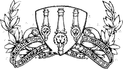
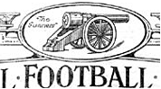
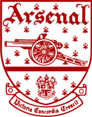
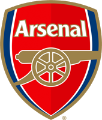
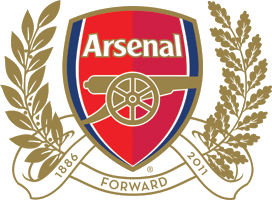

Club History |
1888 |
The club was first formed in 1888 in the borough of Woolwich and therefore this original crest was based upon the coat of arms of that borough. The three things that you see in the middle are actually cannons and they derive from the military history of the borough of Woolwich, and you will see the cannon theme throughout the development of the crest. | |
1922 - 1949 |
As you can see from the first picture they remained with the cannon and military them, but this crest featured a horizontal eastward facing cannon. Then from the next picture you can see that in 1925 it was slighlty changed to a thinner looking cannon and instead facing westward with the capiton "The Gunners" to the right of it. From this moment on up until the present day you can see a thinner version of the cannon on the crest. This may have been an aesthetic change in the design as it was never really known why or where it came from. | |
1949 |
The first crest from the left was the first Victoria Concordia Crescit (VCC) crest that was first seen in 1949 and was replaced by the crest you see today. The words Victoria Concordia Crescit are displayed at eh bottom of the crest and is actually latin for "Victory groes out of harmony". We also see the westard facing cannon again and the word Arsenal in a fancy styled font. Then the next crest you see to the right was a later version, which just has some added color to make it look slightly more appealing and stand out. | |
2001 |
Then in 2001 the VCC crest was slightly cleaned up again, mainly for cosmetic reasons to make it look more appealing and aesthetically pleasing | |
2002 |
The new crest appeared in 2002 which came about because a lot of different reasons including the change that was coming with the move from Highbury to the Emirates and wanting to move forward with that. Also because of the fact that because the VCC badge incorporated a lot of different features from the past, Arsenal were unable to copyright the crest which would've been a big reason for the change. | |
2011 |
The crest that you see on the shirts of Arsenal FC today came in the 2011/2012 season and is a special 125th anniversary version of the crest. It includes the latest crest in the centre and on the outside are the leaves which are very similar to those that you have seen on the original crest. | |